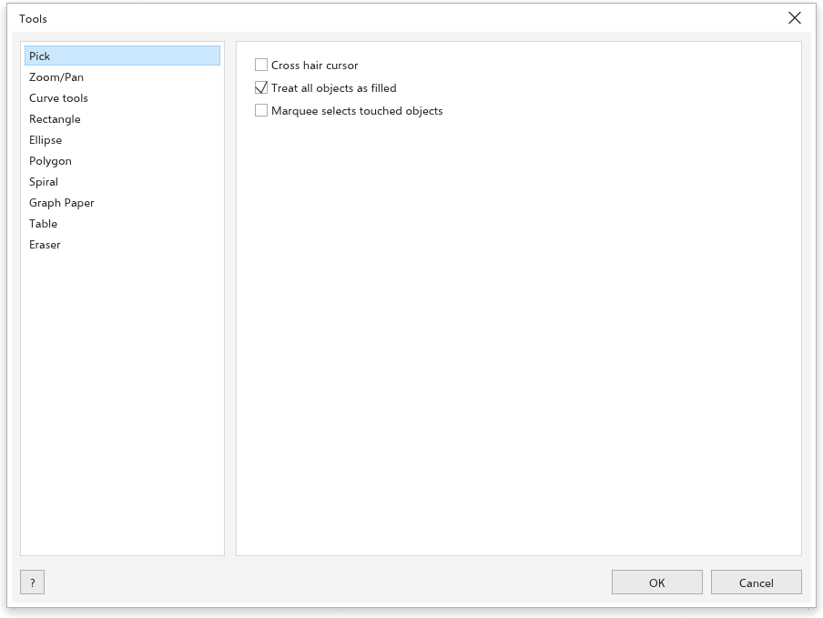
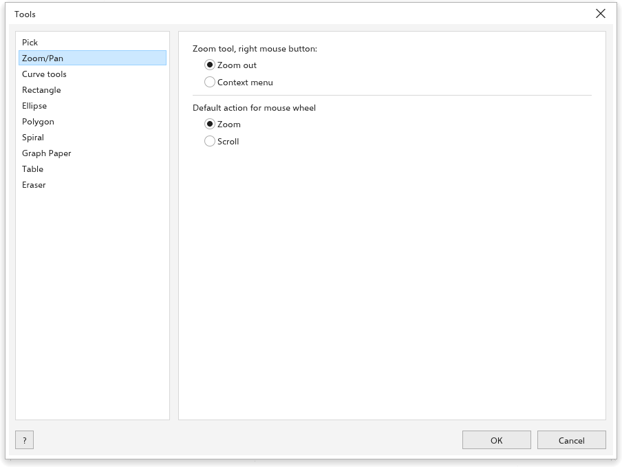
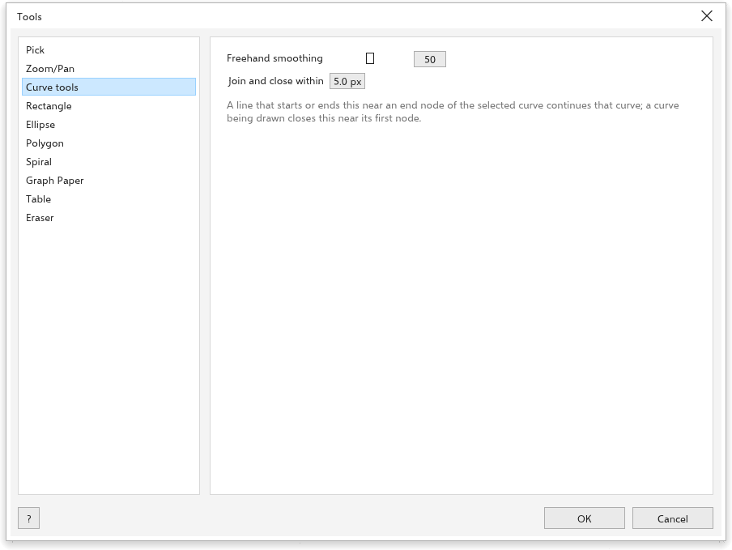
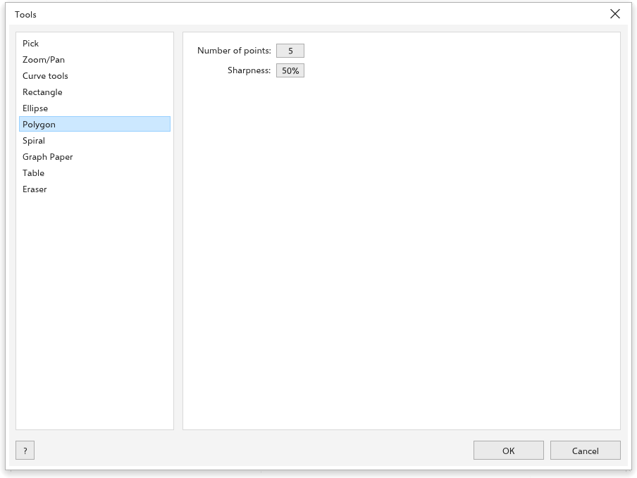
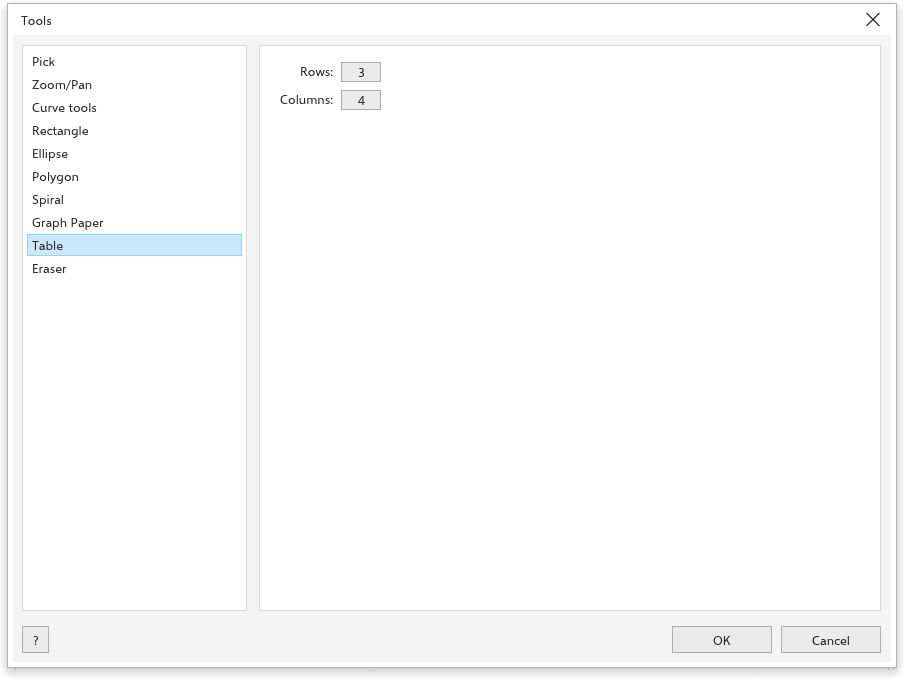

工具选项
工具 > 选项 > 工具 设置工具的行为及其绘制的新对象。这些值大多也位于各工具的属性栏上。
选择

- 十字光标：指针为十字线。
- 将所有对象视为已填充（打开）：在未填充对象内部单击即可选中它。
- 选取框选择接触到的对象（关闭）：选取框也选择它仅仅接触到的对象；此时按住 Alt 只选择完全位于其中的对象。
缩放和平移

- 缩放工具，鼠标右键：缩小（起初选用）或 上下文菜单。
- 鼠标滚轮的默认操作：缩放 或 滚动。
曲线

- 手绘平滑：0 到 100（起初为 50）。
- 连接和闭合距离：线条的起点离端节点多近才会延续该曲线（起初为 5 个屏幕像素）。请参阅 延续曲线。
矩形

矩形角：圆角、扇形角 或 倒棱角，四个角的大小以及 同时编辑所有角。缩放角：相对角缩放。
椭圆形

椭圆、饼形 或 弧形，以及 起始角度 和 结束角度。
多边形

点数 和 锐度。
螺纹

圈数，以及 对称式螺纹 或 对数螺纹。
图纸

网格的 行 和 列。
表格

新表格的 行 和 列。
橡皮擦

橡皮擦厚度（起初为 6.35 mm），以及 圆形笔尖 或 方形笔尖。